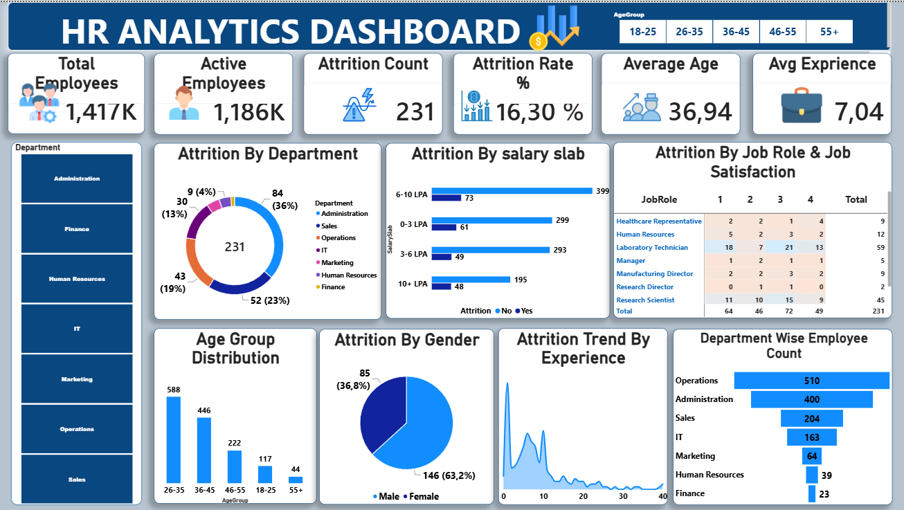

Power BI project
HR Analytics Dashboard
Interactive HR reporting to explore employee data and identify attrition trends.

Dashboard demo
Watch a short walkthrough of the interactive HR Analytics dashboard.
Project overview
This Power BI dashboard consolidates key workforce indicators in one clear view. It supports analysis of employee headcount, attrition, demographics, job roles and departmental performance.
Key insights
- Employee and active employee counts
- Attrition rate by department, gender and salary slab
- Age-group distribution and experience trends
- Department and job-role breakdowns
Power BIData AnalysisHR AnalyticsData Visualization
← Back to my works